Publications
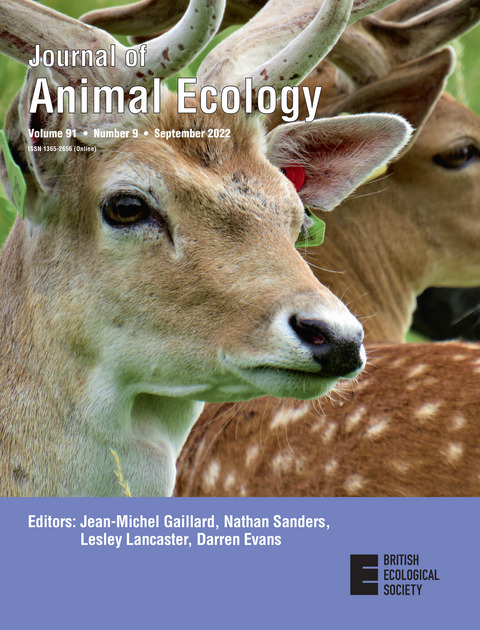
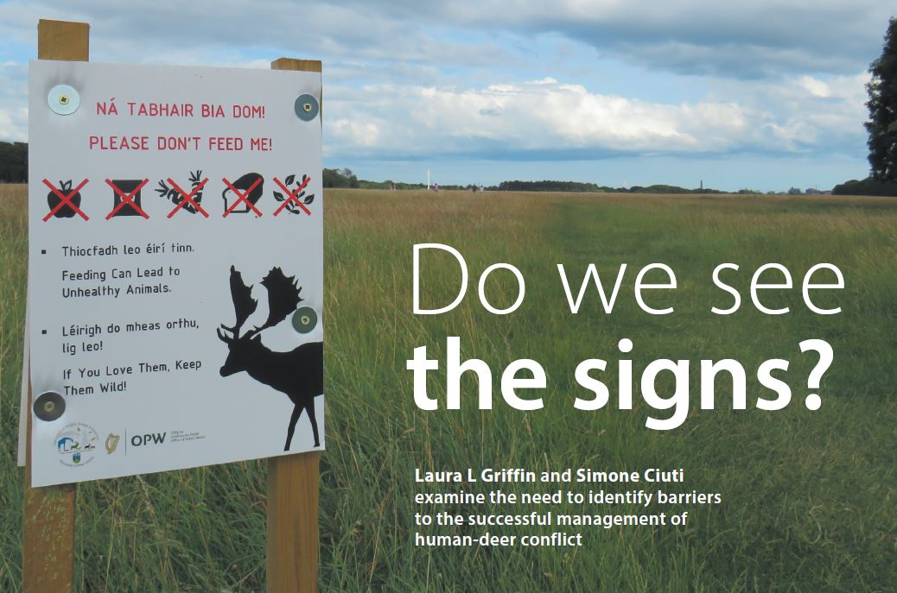
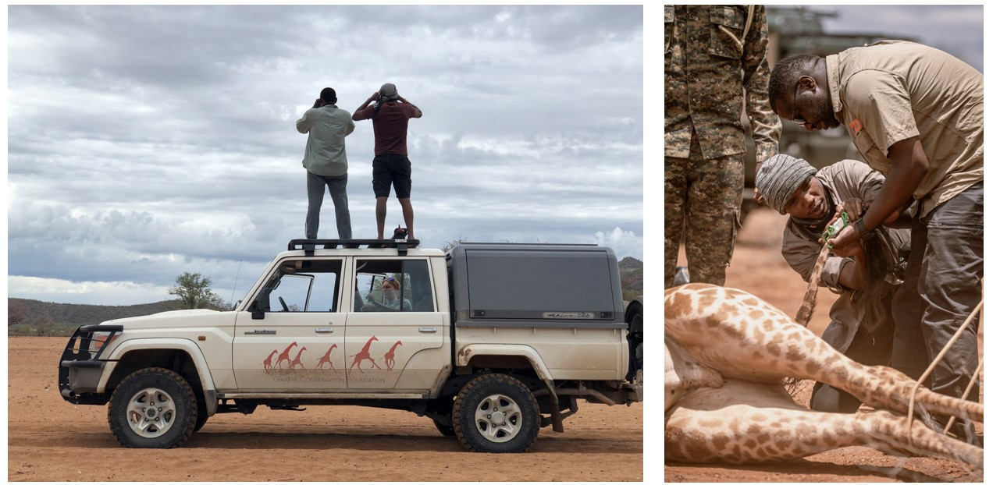
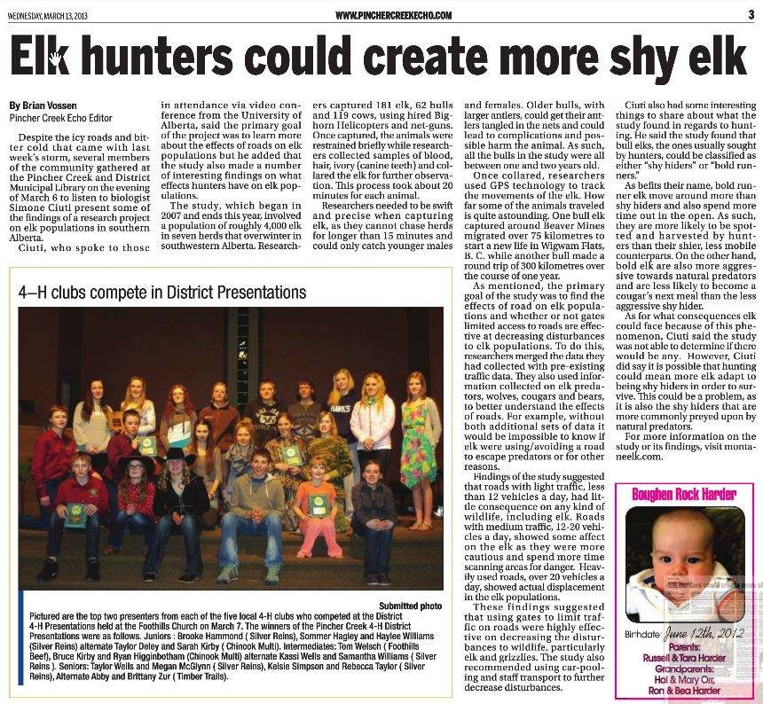
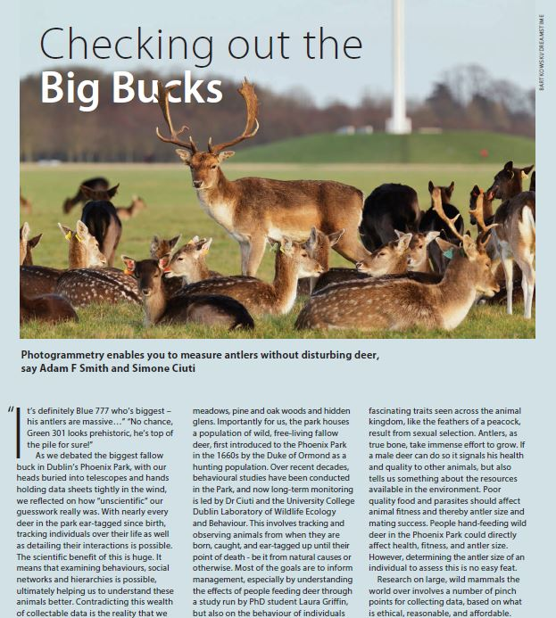
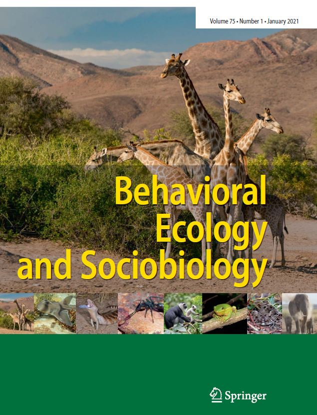
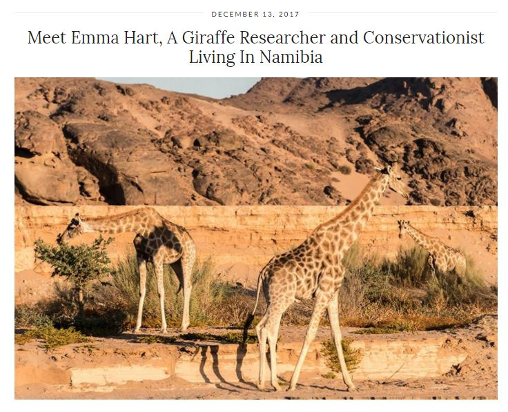
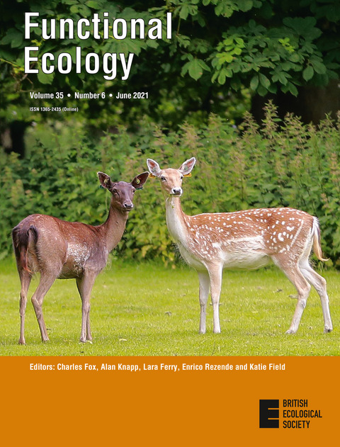
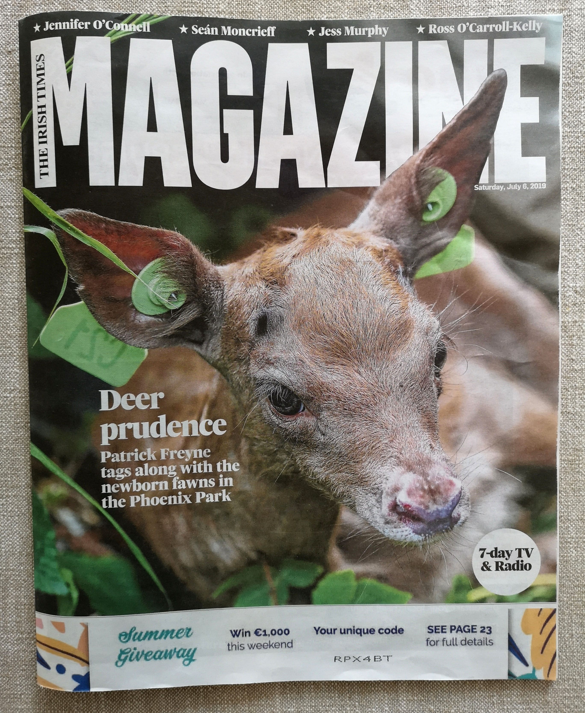
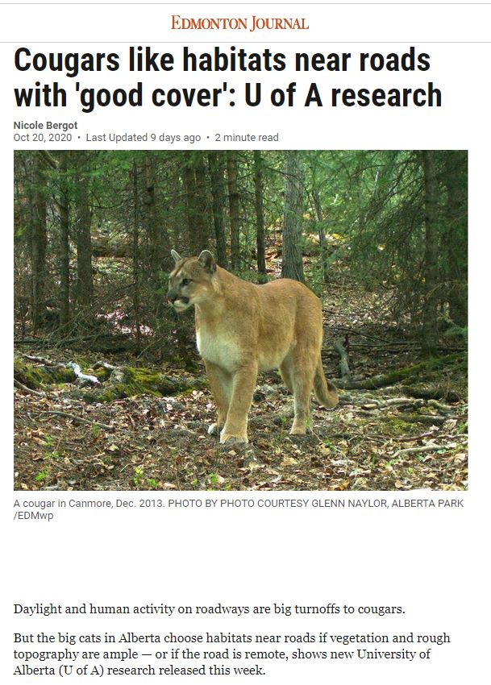
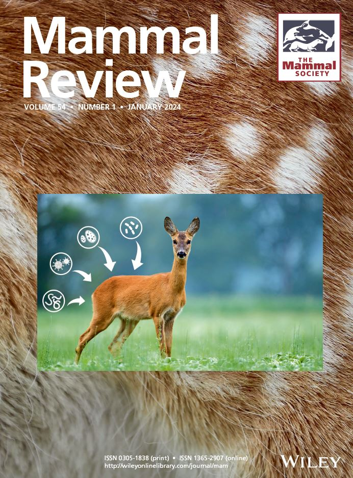
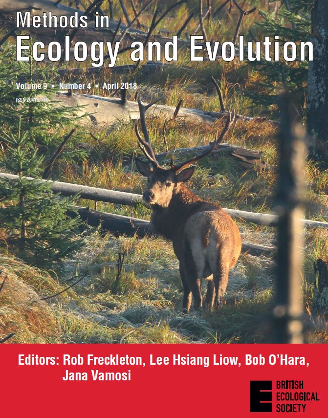
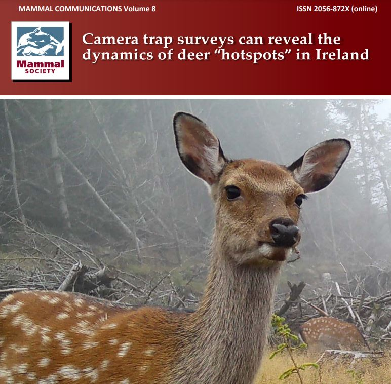
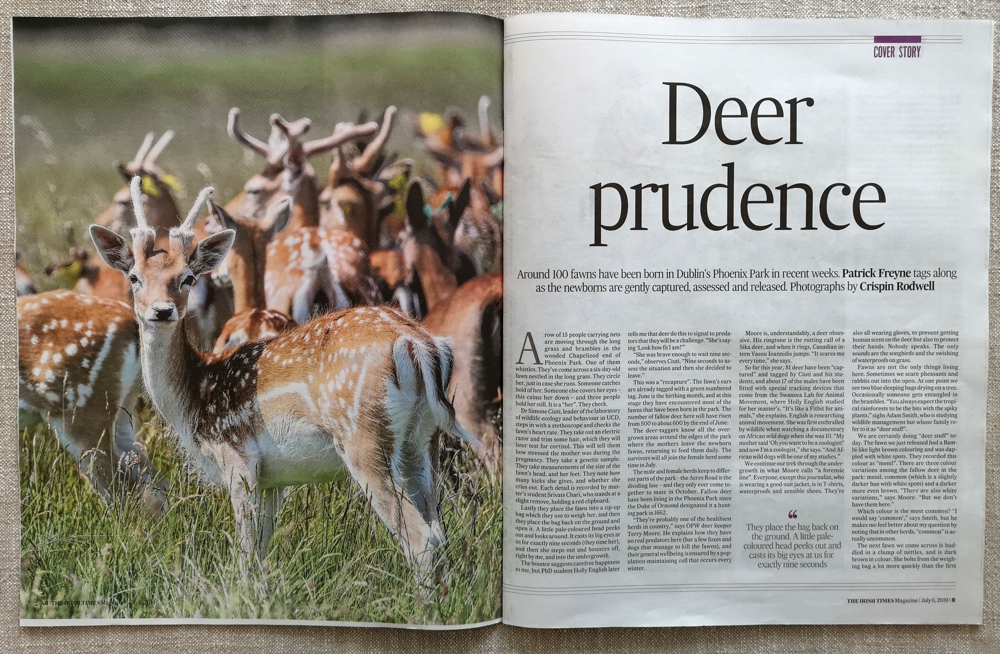
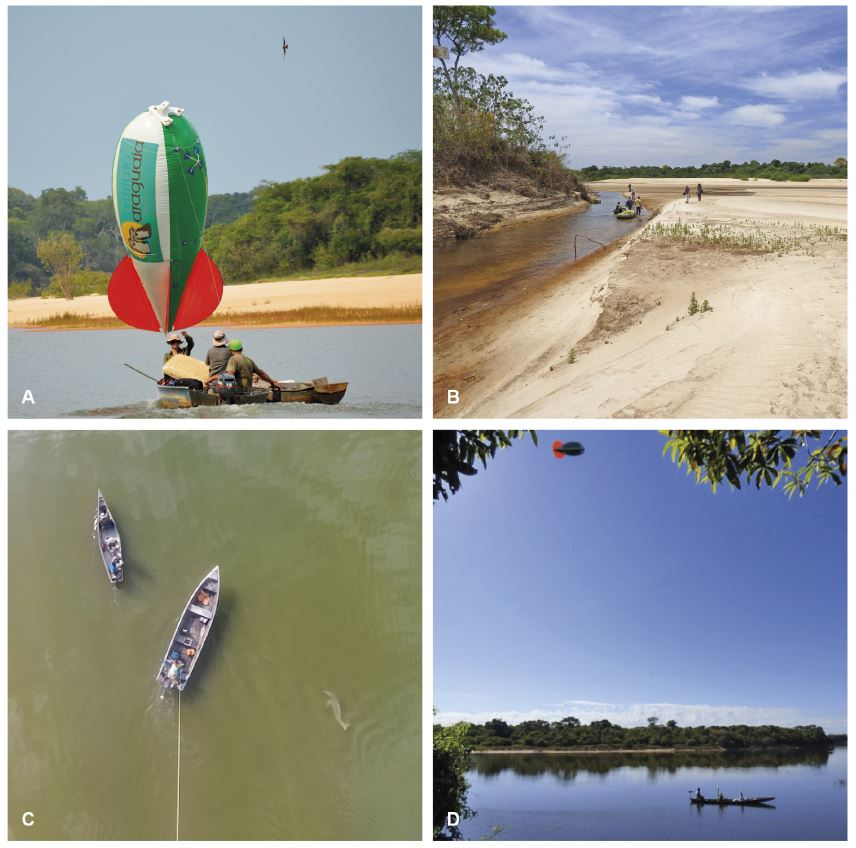
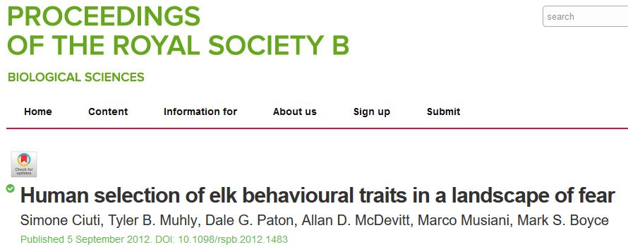
Journal Articles
References automatically imported from Web of Science on 25.09.2027. For full publication records please visit Google Scholar
References
1.
G. O’Shea, D. McLaughlin, L. L. Griffin, J. Faull, L. B. Fraser, J. Nolan, S. Ciuti, G. Stewart, Linking rumen physiology to deer ecology: Impact of season and wildlife feeding activity on ruminal urea transporters in fallow deer. MAMMALIAN BIOLOGY, doi: 10.1007/s42991-026-00614-2 (2026).
2.
F. Corcoran, J. Devaney, V. Morera-Pujol, S. Ciuti, National forest inventory data reveals differential impacts of deer species on plant growth forms. FOREST ECOLOGY AND MANAGEMENT 619 (2026).
3.
J. Faull, L. L. Griffin, C. Yu, B. Amin, A. F. Smith, A. Haigh, A. David, S. Redmond, N. Collins, S. Ciuti, Approaching humans for food is a behavior transmitted from mothers to offspring in a large herbivore. BEHAVIORAL ECOLOGY 37 (2026).
4.
N. Amin, C. Brock, A. Beech, V. Morera-Pujol, A. F. Smith, S. Ciuti, T. Caruso, Dominance of indirect effects of deer populations on soil biodiversity. EUROPEAN JOURNAL OF SOIL BIOLOGY 129 (2026).
5.
P. Rozier-Delgado, M. Vonderscher, L. Blervaque, F. Brivio, B. Buuveibaatar, S. Chamaille-Jammes, S. Ciuti, P. Christe, H. M. English, A. Eriksen, A. Fillon, S. Grignolio, F. Jego, P. Kaczensky, R. Latini, P.-A. Libourel, C. Lorand, P. Marchand, N. Marques, E. Nivois, E. Pisicchio, P. Surer, M. Valeix, F. Zimmermann, J.-M. Gaillard, M. Garel, A. Loison, B. Morel, Evaluation of mammalian endurance using accelerometry in natura: Bridging exercise physiology and ecology. JOURNAL OF EXPERIMENTAL BIOLOGY 229 (2026).
6.
C. Yu, B. Amin, A. David, J. Faull, K. Conteddu, L. L. Griffin, A. F. Smith, A. Haigh, S. Ciuti, Uncovering the process of sexual segregation: Male early-life individual tactics shape its onset and affect phenotypic quality in a large mammal. INTEGRATIVE ZOOLOGY, doi: 10.1111/1749-4877.70085 (2026).
7.
R. M. Khouri, K. J. Murphy, V. Morera-Pujol, G. McGrath, T. Burkitt, D. Quinn, A. W. Byrne, S. Ciuti, The effect of wildlife host hotspots on bovine tuberculosis (bTB) risk dynamics in a disturbed landscape. LANDSCAPE ECOLOGY 41 (2026).
8.
L. Corlatti, S. Ciuti, Indirect effects of hunting on wildlife. WILDLIFE BIOLOGY 2026 (2026).
9.
B. Gehr, Adam. F. Smith, S. Ciuti, S. Muff, N. C. Bonnot, F. Ossi, N. Morellet, A. Berger, T. Borowik, J. De Groeve, M. Heurich, L. Keller, P. Kjellander, M. Kroeschel, S. Nicoloso, N. Ranc, P. Sunde, R. T. Torres, J.-M. Gaillard, F. Cagnacci, Navigating multi-predator dynamic risk landscapes in anthropogenic environments: Spatio-temporal plasticity in roe deer habitat selection. LANDSCAPE ECOLOGY 41 (2026).
10.
J. Faull, L. L. Griffin, G. Nolan, A. Haigh, A. David, S. Redmond, N. Collins, P. Mcdonnell, A. Kane, S. Ciuti, If you leave it, you lose it: Managing human-wildlife feeding interactions requires constant attention, interdisciplinary approaches and long-term monitoring. PEOPLE AND NATURE 8, 666–681 (2026).
11.
H. M. English, P. Romero, L. Bull, B. Nolan, P. Bongi, V. Huuskonen, S. Ciuti, Refining capture and collaring protocols for red foxes. ECOLOGY AND EVOLUTION 16 (2026).
12.
M. L. Bastianelli, J. Heeres, M. Gotz, S. Jerosch, O. Simon, J. Lang, T. Nava, S. Streif, C. Thiel-Benderh, T. L. Middelhoffi, O. Anders, S. Twietmeyer, F. Cagnacci, C. F. Dormann, S. Ciuti, J. Premier, M. Bhardwaj, M. Heurich, Road mortality risk of a protected felid across fragmented and heterogeneous landscapes in central europe. JOURNAL OF ENVIRONMENTAL MANAGEMENT 396 (2025).
13.
C. Yu, B. Amin, A. David, S. Ciuti, Neonatal personality is linked to trappability in a large mammal. ANIMAL BEHAVIOUR 229 (2025).
14.
P. R. Marco, H. M. English, B. Nolan, S. Ciuti, R. C. Bennett, V. Huuskonen, Comparison of two immobilisation protocols (medetomidine-midazolam and alfaxalone-midazolam) for restraint of urban red foxes (vulpes vulpes) : A pilot study. VETERINARY ANAESTHESIA AND ANALGESIA 52, 737–746 (2025).
15.
A. R. Ryan, A. Zintl, L. L. Griffin, A. Haigh, M. Quinn, P. Sabbatini, B. Amin, S. Ciuti, Fallow deer approaching humans are more likely to be seropositive for toxoplasma gondii. ROYAL SOCIETY OPEN SCIENCE 12 (2025).
16.
K. J. Murphy, U. Kenny, S. Ciuti, A. W. Byrne, Understanding deer management dilemmas: A mixed methods approach to understand diverse stakeholder values in human-wildlife conflicts. EUROPEAN JOURNAL OF WILDLIFE RESEARCH 71 (2025).
17.
L. L. Griffin, L. Finnegan, J. Duval, S. Ciuti, V. Morera-Pujol, H. Li, A. C. Burton, Vulnerable caribou and moose populations display varying responses to mountain pine beetle outbreaks and management. JOURNAL OF WILDLIFE MANAGEMENT 89 (2025).
18.
M. Masilkova, S. Ciuti, T. Podgorski, M. Jezek, K. Morelle, V. Morera-Pujol, Consistent inter-individual variability in movement traits shapes the wild boar movement syndrome. BEHAVIORAL ECOLOGY 36 (2025).
19.
P. Kaur, S. Ciuti, M. Salter-Townshend, D. R. Farine, Using an agent-based model to inform sampling design for animal social network analysis. BEHAVIORAL ECOLOGY AND SOCIOBIOLOGY 79 (2025).
20.
K. J. Murphy, A. W. Byrne, N. Marples, M. J. H. O’Hagan, D. J. Kelly, D. Quinn, P. Breslin, V. Morera-Pujol, R. M. Khouri, D. Barrett, G. Mcgrath, S. Ciuti, Wildlife response to land-use change forces encounters between zoonotic disease hosts and farms in agricultural landscapes. AGRICULTURE ECOSYSTEMS & ENVIRONMENT 386 (2025).
21.
S. Cambreling, J.-M. Gaillard, J.-F. Lemaitre, A. F. Smith, A. David, S. Ciuti, Antler size decreases with increasing age: Evidence of reproductive senescence in male fallow deer (dama dama). JOURNAL OF MAMMALOGY, doi: 10.1093/jmammal/gyae154 (2025).
22.
D. Moreira-Arce, P. M. Vergara, A. Oporto, A. J. Alaniz, C. Hidalgo-Corrotea, A. H. Zuniga, A. Gutierrez, S. Moreno, D. Araya, S. Ciuti, Spatial behavior of mesocarnivores living in seasonal ecosystems: A case study in arid landscapes in northern-central chile. GLOBAL ECOLOGY AND CONSERVATION 57 (2025).
23.
K. Atmeh, C. Bonenfant, J.-M. Gaillard, M. Garel, A. J. M. Hewison, P. Marchand, N. Morellet, P. Anderwald, B. Buuveibaatar, J. L. Beck, M. S. Becker, F. M. van Beest, J. Berg, U. A. Bergvall, R. B. Boone, M. S. Boyce, S. Chamaille-Jammes, Y. Chaval, C. Buyanaa, D. Christianson, S. Ciuti, S. D. Cote, D. R. Diefenbach, E. Droge, J. T. du Toit, S. Dwinnell, J. Fennessy, F. Filli, D. Fortin, E. E. Hart, M. Hayes, M. Hebblewhite, M. Heim, I. Herfindal, M. Heurich, C. von Hoermann, K. Huggler, C. Jackson, A. F. Jakes, P. F. Jones, P. Kaczensky, M. Kauffman, P. Kjellander, T. LaSharr, L. E. Loe, R. May, P. McLoughlin, E. L. Meisingset, E. Merrill, K. L. Monteith, T. Mueller, A. Mysterud, D. Nandintsetseg, K. Olson, J. Payne, S. Pearson, A. O. Pedersen, D. Ranglack, A. K. Reinking, T. Rempfler, C. G. Rice, E. Roskaft, B.-E. Saether, S. Said, H. Santacreu, N. M. Schmidt, D. Smit, J. A. Stabach, M.-H. St-Laurent, J. Taillon, W. D. Walter, K. White, G. Peron, A. Loison, Neonatal antipredator tactics shape female movement patterns in large herbivores. NATURE ECOLOGY & EVOLUTION 9, 142+ (2025).
24.
K. Conteddu, K. Wilson, B. Amin, S. Chari, A. Haigh, L. L. Griffin, M. Quinn, A. Ryan, A. F. Smith, S. Ciuti, Fawn bedsite selection by a large ungulate living in a peri-urban area. EUROPEAN JOURNAL OF WILDLIFE RESEARCH 70 (2024).
25.
P. Kaur, S. Ciuti, F. Ossi, F. Cagnacci, N. Morellet, A. Loison, K. Atmeh, P. Mcloughlin, A. K. Reinking, J. L. Beck, A. C. Ortega, M. Kauffman, M. S. Boyce, A. Haigh, A. David, L. L. Griffin, K. Conteddu, J. Faull, M. Salter-Townshend, A protocol for assessing bias and robustness of social network metrics using GPS based radio-telemetry data. MOVEMENT ECOLOGY 12 (2024).
26.
K. Purves, H. Brown, R. Haverty, A. Ryan, L. L. Griffin, J. McCormack, S. O’Reilly, P. W. Mallon, V. Gautier, J. P. Cassidy, A. Fabre, M. J. Carr, G. Gonzalez, S. Ciuti, N. F. Fletcher, SARS-CoV-2 seropositivity in urban population of wild fallow deer, dublin, ireland, 2020-2022. EMERGING INFECTIOUS DISEASES 30 (2024).
27.
K. Conteddu, H. M. English, A. W. Byrne, B. Amin, L. L. Griffin, P. Kaur, V. Morera-Pujol, K. J. Murphy, M. Salter-Townshend, A. F. Smith, S. Ciuti, A scoping review on bovine tuberculosis highlights the need for novel data streams and analytical approaches to curb zoonotic diseases. VETERINARY RESEARCH 55 (2024).
28.
M. L. Bastianelli, C. von Hoermann, K. Kirchner, J. Signer, C. Dupke, M. Henrich, E. Wielgus, C. Fiderer, E. Belotti, L. Bufka, S. Ciuti, C. F. Dormann, T. Kuemmerle, I. Storch, C. Grilo, M. Heurich, Risk response towards roads is consistent across multiple species in a temperate forest ecosystem. OIKOS 2024 (2024).
29.
J. Faull, K. Conteddu, L. L. Griffin, B. Amin, A. F. Smith, A. Haigh, S. Ciuti, Do human-wildlife interactions predict offspring hiding strategies in peri-urban fallow deer? ROYAL SOCIETY OPEN SCIENCE 11 (2024).
30.
H. M. English, L. Borger, A. Kane, S. Ciuti, Advances in biologging can identify nuanced energetic costs and gains in predators. MOVEMENT ECOLOGY 12 (2024).
31.
A. W. Byrne, A. Allen, S. Ciuti, E. Gormley, D. J. Kelly, N. J. Marks, N. M. Marples, F. Menzies, I. Montgomery, C. Newman, M. O’Hagan, N. Reid, D. M. Scantlebury, P. Stuart, M. Tsai, Badger ecology, bovine tuberculosis, and population management: Lessons from the island of ireland. TRANSBOUNDARY AND EMERGING DISEASES 2024 (2024).
32.
B. Amin, R. Fishman, M. Quinn, D. Matas, R. Palme, L. Koren, S. Ciuti, Sex differences in the relationship between maternal and foetal glucocorticoids in a free-ranging large mammal. PEER COMMUNITY JOURNAL 4 (2024).
33.
K. J. Murphy, S. Ciuti, T. Burkitt, V. Morera-Pujol, Bayesian areal disaggregation regression to predict wildlife distribution and relative density with low-resolution data. ECOLOGICAL APPLICATIONS 33 (2023).
34.
C. Brock, V. Morera-Pujol, K. J. Murphy, M. Nieuwenhuis, S. Ciuti, Predicting forest damage using relative abundance of multiple deer species and national forest inventory data. FOREST ECOLOGY AND MANAGEMENT 550 (2023).
35.
S. Keenan, D. Niedziela, V. Morera-Pujol, D. Franklin, K. J. Murphy, S. Ciuti, B. J. Mcmahon, Zoonotic disease classification in wildlife: A theoretical framework for researchers. MAMMAL REVIEW 54, 63–77 (2024).
36.
E. E. Hart, A. Haigh, S. Ciuti, A scoping review of the scientific evidence base for rewilding in europe. BIOLOGICAL CONSERVATION 285 (2023).
37.
L. L. Griffin, G. Nolan, A. Haigh, H. Condon, E. O’Hagan, P. McDonnell, A. Kane, S. Ciuti, How can we tackle interruptions to human-wildlife feeding management? Adding media campaigns to the wildlife manager’s toolbox. PEOPLE AND NATURE 5, 1299–1315 (2023).
38.
L. L. Griffin, S. Ciuti, Should we feed wildlife? A call for further research into this recreational activity. CONSERVATION SCIENCE AND PRACTICE 5 (2023).
39.
K. J. Murphy, D. R. Roberts, W. F. Jensen, S. E. Nielsen, S. K. Johnson, B. M. Hosek, B. Stillings, J. Kolar, M. S. Boyce, S. Ciuti, Mule deer fawn recruitment dynamics in an energy disturbed landscape. ECOLOGY AND EVOLUTION 13 (2023).
40.
L. L. Griffin, A. Haigh, B. Amin, J. Faull, F. Corcoran, C. Baker-Horne, S. Ciuti, Does artificial feeding impact neonate growth rates in a large free-ranging mammal? ROYAL SOCIETY OPEN SCIENCE 10 (2023).
41.
V. Morera-Pujol, P. S. Mostert, K. J. Murphy, T. Burkitt, B. Coad, B. J. McMahon, M. Nieuwenhuis, K. Morelle, A. I. Ward, S. Ciuti, Bayesian species distribution models integrate presence-only and presence-absence data to predict deer distribution and relative abundance. ECOGRAPHY 2023 (2023).
42.
A. F. Smith, S. Ciuti, D. Shamovich, V. Fenchuk, B. Zimmermann, M. Heurich, Quiet islands in a world of fear: Wolves seek core zones of protected areas to escape human disturbance. BIOLOGICAL CONSERVATION 276 (2022).
43.
B. Amin, L. Verbeek, A. Haigh, L. L. L. Griffin, S. Ciuti, Risk-taking neonates do not pay a survival cost in a free-ranging large mammal, the fallow deer (dama dama). ROYAL SOCIETY OPEN SCIENCE 9 (2022).
44.
D. McLaughlin, L. L. Griffin, S. Ciuti, G. Stewart, Wildlife feeding activities induce papillae proliferation in the rumen of fallow deer (vol 67, pg 525, 2022). MAMMAL RESEARCH 68, 127 (2023).
45.
D. McLaughlin, L. L. Griffin, S. Ciuti, G. Stewart, Wildlife feeding activities induce papillae proliferation in the rumen of fallow deer. MAMMAL RESEARCH 67, 525–530 (2022).
46.
F. Weiss, F. U. Michler, B. Gillich, J. Tillmann, S. Ciuti, M. Heurich, S. Rieger, Displacement effects of conservation grazing on red deer (cervus elaphus) spatial behaviour. ENVIRONMENTAL MANAGEMENT 70, 763–779 (2022).
47.
B. Amin, D. J. Jennings, A. Norman, A. Ryan, V. Ioannidis, A. Magee, H.-A. Haughey, A. Haigh, S. Ciuti, Neonate personality affects early-life resource acquisition in a large social mammal. BEHAVIORAL ECOLOGY 33, 1025–1035 (2022).
48.
L. L. Griffin, A. Haigh, B. Amin, J. Faull, A. Norman, S. Ciuti, Artificial selection in human-wildlife feeding interactions. JOURNAL OF ANIMAL ECOLOGY 91, 1892–1905 (2022).
49.
K. J. Murphy, L. L. Griffin, G. Nolan, A. Haigh, T. Hochstrasser, S. Ciuti, A. Kane, Applied autoethnography: A method for reporting best practice in ecological and environmental research. JOURNAL OF APPLIED ECOLOGY 59, 2688–2697 (2022).
50.
A. W. Byrne, D. Barrett, P. Breslin, J. O’Keeffe, K. J. Murphy, K. Conteddu, V. Morera-Pujol, E. Ryan, S. Ciuti, Disturbance ecology meets bovine tuberculosis (bTB) epidemiology: A before-and-after study on the association between forest clearfelling and bTB herd risk in cattle herds. PATHOGENS 11 (2022).
51.
K. J. Murphy, V. Morera-Pujol, E. Ryan, A. W. Byrne, P. Breslin, S. Ciuti, Habitat availability alters the relative risk of a bovine tuberculosis breakdown in the aftermath of a commercial forest clearfell disturbance. JOURNAL OF APPLIED ECOLOGY 59, 2333–2345 (2022).
52.
F. Brivio, S. Ciuti, A. Pipia, S. Grignolio, M. Apollonio, Livestock displace european mouflon from optimal foraging sites. EUROPEAN JOURNAL OF WILDLIFE RESEARCH 68 (2022).
53.
L. L. Griffin, A. Haigh, K. Conteddu, M. Andaloc, P. McDonnell, S. Ciuti, Reducing risky interactions: Identifying barriers to the successful management of human-wildlife conflict in an urban parkland. PEOPLE AND NATURE 4, 918–930 (2022).
54.
E. E. Hart, S. Ciuti, L. Herrmann, J. Fennessy, E. Wells, M. Salter-Townshend, Static and dynamic methods in social network analysis reveal the association patterns of desert-dwelling giraffe. BEHAVIORAL ECOLOGY AND SOCIOBIOLOGY 76 (2022).
55.
K. J. Murphy, S. Ciuti, The wildlife techniques manual. BASIC AND APPLIED ECOLOGY 59, 1–3 (2022).
56.
G. Passoni, T. Coulson, N. Ranc, A. Corradini, A. J. M. Hewison, S. Ciuti, B. Gehr, M. Heurich, F. Brieger, R. Sandfort, A. Mysterud, N. Balkenhol, F. Cagnacci, Roads constrain movement across behavioural processes in a partially migratory ungulate. MOVEMENT ECOLOGY 9 (2021).
57.
A. Caravaggi, T. F. Amado, R. K. Brook, S. Ciuti, C. T. Darimont, M. Drouilly, H. M. English, K. A. Field, G. Iossa, J. E. Martin, A. G. McElligott, A. Mohammadi, D. Nayeri, H. M. K. O’Neill, P. C. Paquet, S. Periquet, G. Proulx, D. Rabaiotti, M. R. Recio, C. D. Soulsbury, T. Tadich, R. Wynn-Grant, On the need for rigorous welfare and methodological reporting for the live capture of large carnivores: A response to de araujo et al. (2021). METHODS IN ECOLOGY AND EVOLUTION 12, 1793–1799 (2021).
58.
B. Amin, D. J. Jennings, A. F. Smith, M. Quinn, S. Chari, A. Haigh, D. Matas, L. Koren, S. Ciuti, In utero accumulated steroids predict neonate anti-predator response in a wild mammal. FUNCTIONAL ECOLOGY 35, 1255–1267 (2021).
59.
E. E. Hart, J. Fennessy, E. Wells, S. Ciuti, Seasonal shifts in sociosexual behaviour and reproductive phenology in giraffe. BEHAVIORAL ECOLOGY AND SOCIOBIOLOGY 75 (2021).
60.
K. J. Murphy, S. Ciuti, A. Kane, An introduction to agent-based models as an accessible surrogate to field-based research and teaching. ECOLOGY AND EVOLUTION 10, 12482–12498 (2020).
61.
J. E. Ban, S. Ciuti, C. C. Nielsen, M. S. Boyce, Cougar roadside habitat selection: Incorporating topography and traffic. GLOBAL ECOLOGY AND CONSERVATION 23 (2020).
62.
E. E. Hart, J. Fennessy, S. Hauenstein, S. Ciuti, Intensity of giraffe locomotor activity is shaped by solar and lunar zeitgebers. BEHAVIOURAL PROCESSES 178 (2020).
63.
R. T. Bowyer, D. R. McCullough, J. L. Rachlow, S. Ciuti, J. C. Whiting, Evolution of ungulate mating systems: Integrating social and environmental factors. ECOLOGY AND EVOLUTION 10, 5160–5178 (2020).
64.
B. Gehr, N. C. Bonnot, M. Heurich, F. Cagnacci, S. Ciuti, A. J. M. Hewison, J.-M. Gaillard, N. Ranc, J. Premier, K. Vogt, E. Hofer, A. Ryser, E. Vimercati, L. F. Keller, Stay home, stay safe-site familiarity reduces predation risk in a large herbivore in two contrasting study sites. JOURNAL OF ANIMAL ECOLOGY 89, 1329–1339 (2020).
65.
E. E. Hart, J. Fennessy, S. Chari, S. Ciuti, Habitat heterogeneity and social factors drive behavioral plasticity in giraffe herd-size dynamics. JOURNAL OF MAMMALOGY 101, 248–258 (2020).
66.
E. E. Hart, J. Fennessy, H. B. Rasmussen, M. Butler-Brown, A. B. Muneza, S. Ciuti, Precision and performance of an 180 g solar-powered GPS device for tracking medium to large-bodied terrestrial mammals. WILDLIFE BIOLOGY 2020 (2020).
67.
N. Bonnot, O. Couriot, A. Berger, F. Cagnacci, S. Ciuti, J. De Groeve, B. Gehr, M. Heurich, P. Kjellander, M. Kroeschel, N. Morellet, L. Soennichsen, A. J. M. Hewison, Fear of the dark? Contrasting impacts of humans versus lynx on diel activity of roe deer across EuropeMots-cles. JOURNAL OF ANIMAL ECOLOGY 89, 132–145 (2020).
68.
A. G. Locatelli, S. Ciuti, P. Presetnik, R. Toffoli, E. Teeling, Long-term monitoring of the effects of weather and marking techniques on body condition in the kuhl’s pipistrelle bat, pipistrellus kuhlii. ACTA CHIROPTEROLOGICA 21, 87–102 (2019).
69.
D. Fechter, S. Ciuti, D. Kelle, P. Pratje, C. F. Dormann, I. Storch, Spatial behavior in rehabilitated orangutans in sumatra: Where do they go? PLOS ONE 14 (2019).
70.
F. Brivio, M. Zurmuhl, S. Grignolio, J. von Hardenberg, M. Apollonio, S. Ciuti, Forecasting the response to global warming in a heat-sensitive species. SCIENTIFIC REPORTS 9 (2019).
71.
G. Arnott, A. Bastian, N. Boogert, Lauren. N. Brent, A. J. Carter, A. S. Chaine, S. Ciuti, V. B. Deecke, S. De Kort, M. L. Dyson, D. W. Franks, I. Giardina, F. Gilbert, L. Guillette, Y. Hsu, L. Kelly, F. Korner-Nievergelt, G. Lehmann, J. Lehmann, T. K. Lehtonen, Z. Lewis, M. Lihoreau, H. Lovlie, E. M. -Briefer, H. H. Marshall, R. Mundry, K. Nakata, N. Newton-Fisher, O. Pays-Volard, S. Semple, A. Takahashi, B. Tschirren, B. Voelkl, C. Wascher, A. Wignall, A. Wilkinson, J. Altmann, M. D. Beecher, M. D. Breed, L. C. Drickamer, S. A. Foster, B. G. Galef Jr., P. A. Gowaty, E. D. Ketterson, J. R. Lucas, M. P. Scott, W. A. Searcy, C. T. Snowdon, G. W. Uetz, M. J. West, A. S. A. Behav, A. B. Soc, Editors’ acknowledgments. ANIMAL BEHAVIOUR 146, 181–183 (2018).
72.
C. F. Dormann, J. M. Calabrese, G. Guillera-Arroita, E. Matechou, V. Bahn, K. Barton, C. M. Beale, S. Ciuti, J. Elith, K. Gerstner, J. Guelat, P. Keil, J. J. Lahoz-Monfort, L. J. Pollock, B. Reineking, D. R. Roberts, B. Schroeder, W. Thuiller, D. I. Warton, B. A. Wintle, S. N. Wood, R. O. Wuest, F. Hartig, Model averaging in ecology: A review of bayesian, information-theoretic, and tactical approaches for predictive inference. ECOLOGICAL MONOGRAPHS 88, 485–504 (2018).
73.
S. Ciuti, H. Tripke, P. Antkowiak, R. S. Gonzalez, C. F. Dormann, M. Heurich, An efficient method to exploit LiDAR data in animal ecology. METHODS IN ECOLOGY AND EVOLUTION 9, 893–904 (2018).
74.
D. Roberts, S. Ciuti, Q. E. Barber, C. Willier, S. E. Nielsen, Accelerated seed dispersal along linear disturbances in the canadian oil sands region. SCIENTIFIC REPORTS 8 (2018).
75.
J.-L. Kaemmerle, J. Coppes, S. Ciuti, R. Suchant, I. Storch, Range loss of a threatened grouse species is related to the relative abundance of a mesopredator. ECOSPHERE 8 (2017).
76.
J. S. F. Oliveira, G. Georgiadis, S. Campello, R. A. Brandao, S. Ciuti, Improving river dolphin monitoring using aerial surveys. ECOSPHERE 8 (2017).
77.
D. R. Roberts, V. Bahn, S. Ciuti, M. S. Boyce, J. Elith, G. Guillera-Arroita, S. Hauenstein, J. J. Lahoz-Monfort, B. Schroeder, W. Thuiller, D. I. Warton, B. A. Wintle, F. Hartig, C. F. Dormann, Cross-validation strategies for data with temporal, spatial, hierarchical, or phylogenetic structure. ECOGRAPHY 40, 913–929 (2017).
78.
H. Thurfjell, S. Ciuti, M. S. Boyce, Learning from the mistakes of others: How female elk (cervus elaphus) adjust behaviour with age to avoid hunters. PLOS ONE 12 (2017).
79.
D. G. Paton, S. Ciuti, M. Quinn, M. S. Boyce, Hunting exacerbates the response to human disturbance in large herbivores while migrating through a road network. ECOSPHERE 8 (2017).
80.
R. A. Benz, M. S. Boyce, H. Thurfjell, D. G. Paton, M. Musiani, C. F. Dormann, S. Ciuti, Dispersal ecology informs design of large-scale wildlife corridors. PLOS ONE 11 (2016).
81.
S. Ciuti, M. Apollonio, Reproductive timing in a lekking mammal: Male fallow deer getting ready for female estrus. BEHAVIORAL ECOLOGY 27, 1522–1532 (2016).
82.
S. Ciuti, W. F. Jensen, S. E. Nielsen, M. S. Boyce, Predicting mule deer recruitment from climate oscillations for harvest management on the northern great plains. JOURNAL OF WILDLIFE MANAGEMENT 79, 1226–1238 (2015).
83.
E. P. Ensing, S. Ciuti, F. A. L. M. de Wijs, D. H. Lentferink, A. ten Hoedt, M. S. Boyce, R. A. Hut, GPS based daily activity patterns in european red deer and north american elk (cervus elaphus): Indication for a weak circadian clock in ungulates. PLOS ONE 9 (2014).
84.
M. Apollonio, F. De Cena, P. Bongi, S. Ciuti, Female preference and predation risk models can explain the maintenance of a fallow deer (dama dama) lek and its “handy” location. PLOS ONE 9 (2014).
85.
J. Killeen, H. Thurfjell, S. Ciuti, D. Paton, M. Musiani, M. S. Boyce, Habitat selection during ungulate dispersal and exploratory movement at broad and fine scale with implications for conservation management. MOVEMENT ECOLOGY 2 (2014).
86.
H. Thurfjell, S. Ciuti, M. S. Boyce, Applications of step-selection functions in ecology and conservation. MOVEMENT ECOLOGY 2 (2014).
87.
R. Chirichella, S. Ciuti, S. Grignolio, M. Rocca, M. Apollonio, The role of geological substrate for horn growth in ungulates: A case study on alpine chamois. EVOLUTIONARY ECOLOGY 27, 145–163 (2013).
88.
R. Chirichella, S. Ciuti, M. Apollonio, Effects of livestock and non-native mouflon on use of high-elevation pastures by alpine chamois. MAMMALIAN BIOLOGY 78, 344–350 (2013).
89.
S. Ciuti, J. M. Northrup, T. B. Muhly, S. Simi, M. Musiani, J. A. Pitt, M. S. Boyce, Effects of humans on behaviour of wildlife exceed those of natural predators in a landscape of fear. PLOS ONE 7 (2012).
90.
S. Ciuti, T. B. Muhly, D. G. Paton, A. D. McDevitt, M. Musiani, M. S. Boyce, Human selection of elk behavioural traits in a landscape of fear. PROCEEDINGS OF THE ROYAL SOCIETY B-BIOLOGICAL SCIENCES 279, 4407–4416 (2012).
91.
S. Ciuti, M. Apollonio, Do antlers honestly advertise the phenotypic quality of fallow buck (dama dama) in a lekking population? ETHOLOGY 117, 133–144 (2011).
92.
S. Ciuti, F. De Cena, P. Bongi, M. Apollonio, Benefits of a risky life for fallow deer bucks (dama dama) aspiring to patrol a lek territory. BEHAVIOUR 148, 435–460 (2011).
93.
S. Grignolio, E. Merli, P. Bongi, S. Ciuti, M. Apollonio, Effects of hunting with hounds on a non-target species living on the edge of a protected area. BIOLOGICAL CONSERVATION 144, 641–649 (2011).
94.
F. De Cena, S. Ciuti, M. Apollonio, EVALUATION OF AN EXPANDABLE, BREAKAWAY RADIOCOLLAR FOR SUBADULT CERVIDS. HYSTRIX-ITALIAN JOURNAL OF MAMMALOGY 22, 341–347 (2011).
95.
S. Ciuti, A. Pipia, S. Grignolio, F. Ghiandai, M. Apollonio, Space use, habitat selection and activity patterns of female sardinian mouflon (ovis orientalis musimon) during the lambing season. EUROPEAN JOURNAL OF WILDLIFE RESEARCH 55, 589–595 (2009).
96.
C. Melis, B. Jedrzejewska, M. Apollonio, K. A. Barton, W. Jedrzejewski, J. D. C. Linnell, I. Kojola, J. Kusak, M. Adamic, S. Ciuti, I. Delehan, I. Dykyy, K. Krapinec, L. Mattioli, A. Sagaydak, N. Samchuk, K. Schmidt, M. Shkvyrya, V. E. Sidorovich, B. Zawadzka, S. Zhyla, Predation has a greater impact in less productive environments: Variation in roe deer, capreolus capreolus, population density across europe. GLOBAL ECOLOGY AND BIOGEOGRAPHY 18, 724–734 (2009).
97.
A. Pipia, S. Ciuti, S. Grignolio, S. Luchetti, R. Madau, M. Apollonio, Effect of predation risk on grouping pattern and whistling behaviour in a wild mouflon ovis aries population. ACTA THERIOLOGICA 54, 77–86 (2009).
98.
A. Pipia, S. Ciuti, S. Grignolio, S. Luchetti, R. Madau, M. Apollonio, Influence of sex, season, temperature and reproductive status on daily activity patterns in sardinian mouflon (ovis orientalis musimon). BEHAVIOUR 145, 1723–1745 (2008).
99.
S. Ciuti, M. Apollonio, Ecological sexual segregation in fallow deer (dama dama):: A multispatial and multitemporal approach. BEHAVIORAL ECOLOGY AND SOCIOBIOLOGY 62, 1747–1759 (2008).
100.
S. Ciuti, A. Pipia, F. Ghiandai, S. Grignolio, M. Apollonio, The key role of lamb presence in affecting flight response in sardinian mouflon (ovis orientalis musimon). BEHAVIOURAL PROCESSES 77, 408–412 (2008).